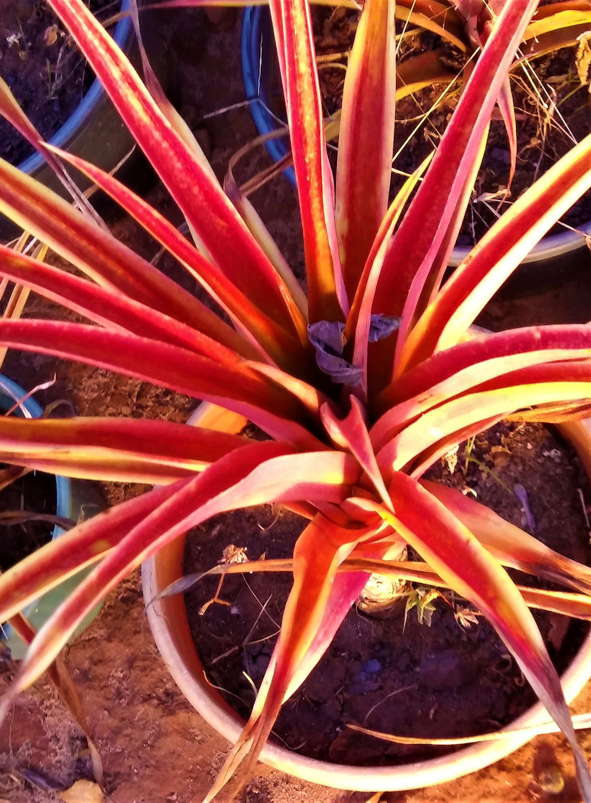
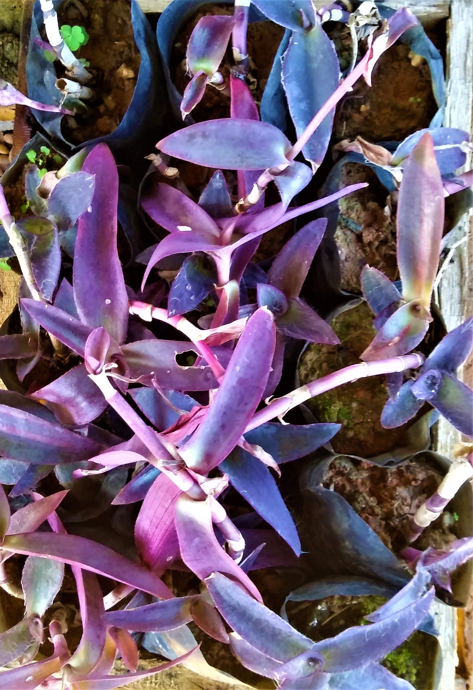

Vasolândia Plantas & CIA
Insumos, terra Adubadas, Artigos de Paisagismo, Grande variedade de plantas, Vasos, Produção de mudas nativas para reflorestamento.
Plantas
Verbena / Verbena officinalis
Vinca / Catharanthus Roseus
Chapéu Chines / Holmskioldia sanguinea
Abacaxi ornamental / Ananas / Ananas ananassoides

Abacaxi Roxo / Tradescantia spathacea
Buchinho

Aptenia / Mesembryanthemum cordifolium
Azaleia / Rhododendron simsii
Beldoega / Portulaca orelacea
Dracena Baby / Cordyline Terminallis
Dracena Cordelini / Cordyline Australlis
Dracena Tricolor / Dracaena Marginata
Coleus
Cravina
Mini Rosa
Ixoria Midi
Mini ixoria
Falsa Vinha

Leocofis
Peperomia Tricolor
Peperomia Rubi
Semania
Pingo De Ouro
Petunea Hibrida
Perpetua
Setecresia

Singonio
Tagete
 (19)9.8602-8184
(19)9.8602-8184
 (19) 3481-6299
(19) 3481-6299 vasolandiaecia@vasolandia.com.br
vasolandiaecia@vasolandia.com.br